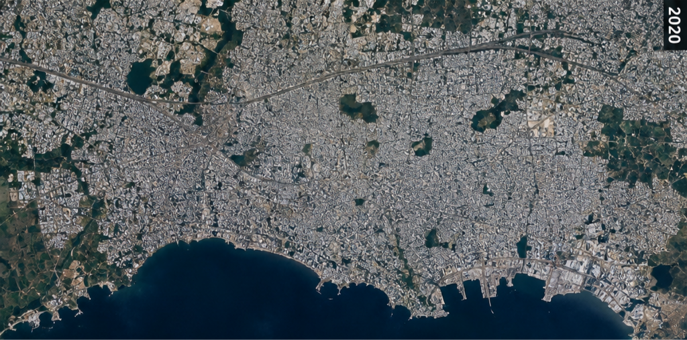

Baseline (Before) City Image
Prior orbital observation of the metropolitan area

Current (After) City Image
Recent satellite observation of urban growth

Urban Analysis Records
| Report ID | Expansion Rate | Changed Pixels | Date / Time | Actions |
|---|